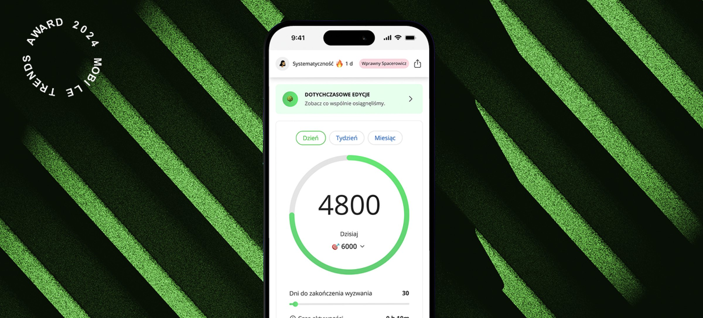

Pięć godzin, które zamieniły wizję w zakres MVP
- Moja rola
- Projekt i prowadzenie warsztatu
- Czas
- 09.2026
- Obszar
- Discovery & Define
Do uzupełnienia · zdjęcie headera
Zdjęcie z warsztatu (ludzie przy tablicy) albo kolaż: fragment blueprintu, karteczki, 2–3 slajdy. Logo i nazwa klienta zasłonięte.
web 1200 × 544 (eksport 2400 × 1088) · mobile 343 × 248 (1029 × 744)
Klient miał badania, brand i wizję, ale nie miał zakresu, więc nie było wyceny ani startu prac
Do uzupełnienia
Grafika / obiekt jak kapsuła w CTRL+
319 × 201 · mobile 343 × 343
- 5 hWarsztatu discovery & define
- 11Osób z dwóch firm przy jednym stole
- 135Wymagań w specyfikacji z ustaleń warsztatu
- < 11 tyg.Do pierwszej działającej wersji serwisu
Do uzupełnienia
Zdjęcie / ilustracja: dom jednorodzinny, kotłownia, modernizacja (bez marki klienta)
516 × 478 · mobile 343 × 318
Kontekst
Wszystko gotowe oprócz zakresu
Klient łączy regionalne firmy grzewcze w ogólnopolską markę modernizacji kotłowni w domach jednorodzinnych. Wchodzi na rynek zrażony agresywną sprzedażą door-to-door. Miał badania, brand w przygotowaniu i długą listę ambicji.
Pytanie warsztatu: co budujemy w pierwszej wersji, dla kogo i kto za co odpowiada?
Lista ambicji na starcie
- 01Konfigurator
- 02Transparentna cena
- 03SLA poniżej godziny
- 04Sieć instalatorów
- 05Program partnerski
Badania klienta
Badania mówiły co innego niż lista ambicji
Klienci nie szukali technologii, tylko sposobu, żeby nie popełnić błędu
-
52,9%
klientów najbardziej obawiało się złej decyzji
-
64,7%
rezygnowało po poznaniu końcowej ceny
-
Instalatorzy
nie chcieli więcej leadów, tylko mniej przypadkowych rozmów
Podejście
Każda godzina kończy się decyzją
Nie zaczynaliśmy od pustej tablicy. Przed warsztatem przeanalizowałam badania klienta, zdefiniowałam persony, przygotowałam wstępną ścieżkę klienta i szablon Service Blueprintu. Zespół dostał hipotezę do poprawienia, a nie pustą kartkę.
-
01
Benchmarki przypięte do lęków, nie do estetyki
Każdy przykład z rynku pokazywałyśmy przez insight z badań, np. „klient boi się, że portal wciśnie mu najdroższe rozwiązanie”. Rozmawialiśmy o zaufaniu, nie o gustach.
-
02
Service Blueprint zamiast listy funkcji
Ten produkt to usługa z ekspertem, CRM i instalatorem w tle. Pytanie „kto to obsłuży?” najszybciej oddzielało MVP od życzeń.
-
03
Wykonawcy przy stole
Backend, frontend i QA uczestniczyli w strategii, więc wykonalność sprawdzaliśmy w trakcie podejmowania decyzji, a nie tydzień później, przy wycenie.
Dwie pętle, jeden rytm
Inspiracja → mapowanie → decyzja
Do uzupełnienia
Diagram agendy (dwie pętle, trzy decyzje) przerysowany w stylu strony albo zdjęcie tablicy z sortowania kart
516 × 478 · mobile kwadrat 343
-
Pętla 1: konfigurator
Serce produktu. Benchmarki przypięte do lęków z badań, mapowanie ścieżki na Service Blueprincie i decyzja, co konfigurator robi w pierwszej wersji.
-
Pętla 2: portal
Wszystko, co otacza konfigurator. Ten sam rytm, a w części mapowania sortowanie kart, z którego powstała architektura portalu.
-
Kto, co i na kiedy? Żadne ustalenie bez właściciela
Ostatnie 20 minut: każda decyzja dostała osobę odpowiedzialną i termin, zanim wyszła z sali.
Najtrudniejszy moment: cena
Transparentność, ale bez ujawniania składowych ceny
Właściciele chcieli być transparentni, ale nie chcieli ujawniać składowych ceny instalacji. Zamiast wybierać między tymi wartościami, wynegocjowaliśmy kompromis: strona pokazuje cenę urządzenia razem z montażem, a o cenę samego urządzenia można zapytać telefonicznie. Klient dostaje uczciwą informację, a firma chroni swoją politykę cenową.
Kluczowe decyzje
Od ambicji do zakresu
Świadomie po MVP
- Wyszukiwarka dotacji
- Asystent AI
- Kody QR na urządzeniach
- Mapy ciepła
„Jeszcze nie” było równie ważnym wynikiem jak lista funkcji.
-
01
Było:
Platforma z konfiguratoremOperator procesu: dobór, ekspert, montaż i serwis pod jedną odpowiedzialnością
Klient boi się pośrednika, który zostawi go z przypadkowym wykonawcą.
-
02
Było:
Transparentna cenaWidełki ceny urządzenia z montażem i jawny zakres
Same pakiety nie odpowiadały na pytanie „co dostaję?”.
-
03
Było:
Pełny katalogNajwyżej 3 opcje, jedna rekomendowana, z zaletami i ograniczeniami
Paraliż decyzyjny i lęk przed „wciskaniem”.
-
04
Było:
Formularz na starcieWynik bez e-maila, dane dopiero przy prośbie o rozmowę
Za wczesny formularz obniża zaufanie.
-
05
Było:
SLA poniżej godzinyKontakt w 24 h z wyborem pory rozmowy
Sieć nie dowiezie godziny, lepiej obiecać mniej i dotrzymać.
Wynik
Zakres, który dało się wycenić i zbudować
Z warsztatu wyszliśmy z jedną definicją produktu i trzema artefaktami
-
Do uzupełnienia
Uproszczony schemat: 7 faz × 4 warstwy, decyzje w akcencie
Service Blueprint w 7 fazach
Od typu budynku po serwis, z rozpisanym zapleczem
-
Do uzupełnienia
Mapa 7 filarów jako drzewo nawigacji
Architektura portalu w 7 filarach
Wynik sortowania kart w drugiej pętli
-
Do uzupełnienia
Macierz / okładka specyfikacji z rozmytym tekstem
Macierz odpowiedzialności
Kto, co i na kiedy, z terminami
-
Specyfikacja z warsztatu, nie z briefu
Dokument ze 135 wymaganiami formalizuje ustalenia z warsztatu. Otwarte zostały tylko kwestie, których warsztat nie rozstrzygnął.
-
Szybki start
Niespełna 11 tygodni później zespół przeglądał pierwszą działającą wersję serwisu. Projekt jest wciąż w realizacji.
-
Wspólny język
Nazwy z warsztatu, np. „konfiguracja odwrócona”, trafiły do specyfikacji i na ekrany.
Refleksja
“Klient, który wie, czego chce, zwykle wie, czego chce docelowo. Rolą projektantki jest pomóc wybrać, co sprawdzamy najpierw”
Blueprint przesunął rozmowę z „jakie funkcje chcemy” na „kto to obsłuży” i był najskuteczniejszym filtrem całego dnia. Dziś od razu zaplanowałabym osobny, krótszy warsztat o logice doboru urządzeń i ustaliłabym bazowe wartości KPI jeszcze podczas warsztatu.
Odkryj więcej
-

Product Discovery | IDI | Decyzja
Od pomysłu do...rezygnacji, jak podjąć trudną decyzję na podstawie danych
-

Konwersja | Omnichannel | Lojalność
Aplikacja mobilna 4F. Ewolucja z kanału sprzedaży w ekosystem lojalnościowy
-

CSR | Grywalizacja | Research
Healthy Cities – jak zamienić aktywność użytkowników w 15 tysięcy posadzonych drzew

Warsztat strategiczny | Od wizji do zakresu MVP
Problem
Klient miał badania, brand i wizję, ale nie miał zakresu. Bez niego nie było wyceny ani startu prac.
Co zrobiłam
Benchmarki przypięte do lęków
Przykłady z rynku pokazywane przez insighty z badań, a nie przez estetykę.
Service Blueprint zamiast listy funkcji
Pytanie „kto to obsłuży?” oddzielało MVP od życzeń.
Wykonawcy przy stole
Backend, frontend i QA sprawdzali wykonalność w trakcie decyzji.
Wynik
- 135Wymagań w specyfikacji z ustaleń warsztatu
- 7 fazService Blueprintu i 7 filarów portalu
- < 11 tyg.Do pierwszej działającej wersji